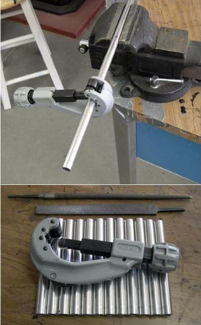

| Inserts (1 of 6) | Menu Previous Page Next Page |
|  |
Cutting Inserts
Inserts are 6" long. Initially, Mark out 14 inserts on .625in (5/8")
diameter tubing. Aluminum is easy to cut. A vice provides a stable
base but is not required.
After cutting the insert sections, use a file to smooth the edges, if needed, to allow the inserts to slide easily into the .750 ( 3/4") stringer sections. Though an inexpensive tube cutter will do the job, a heavy duty model, as shown, makes the job easier. Next, The 6in inserts will be drilled and riveted into the 6ft stringer sections.
|